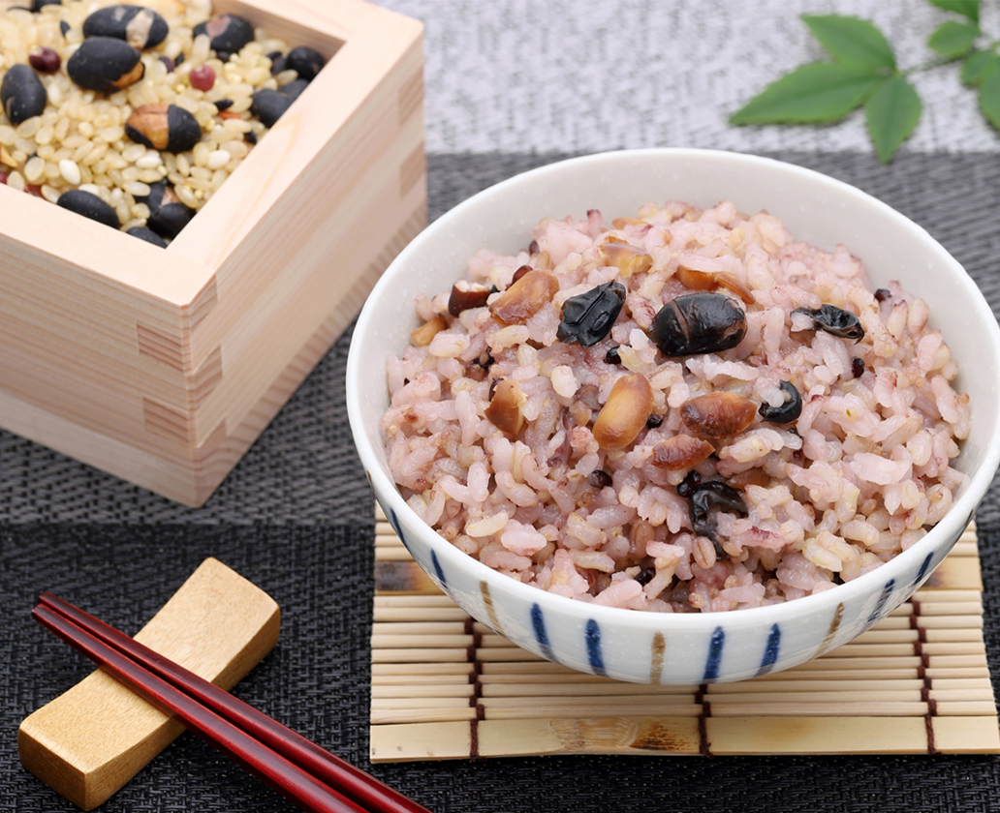
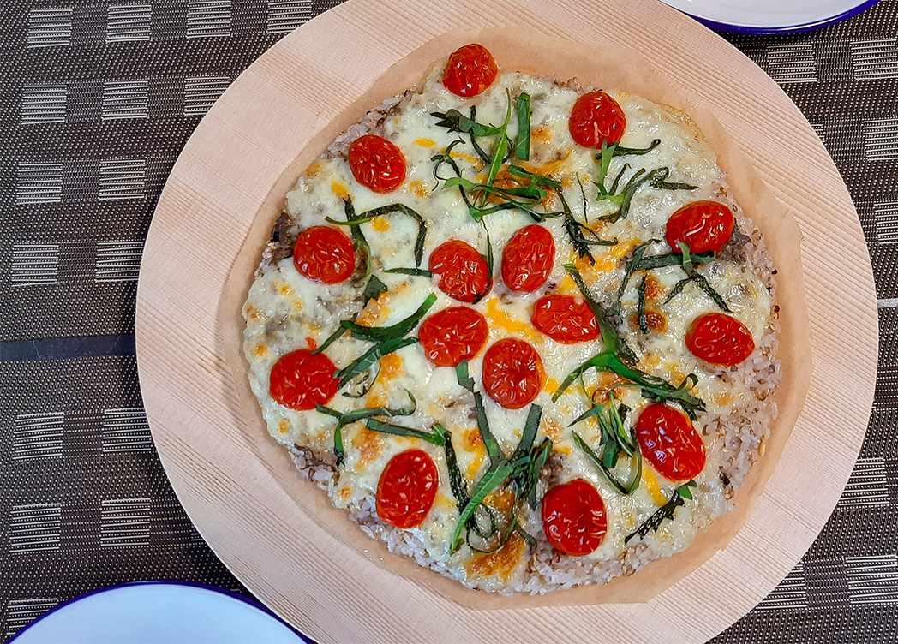
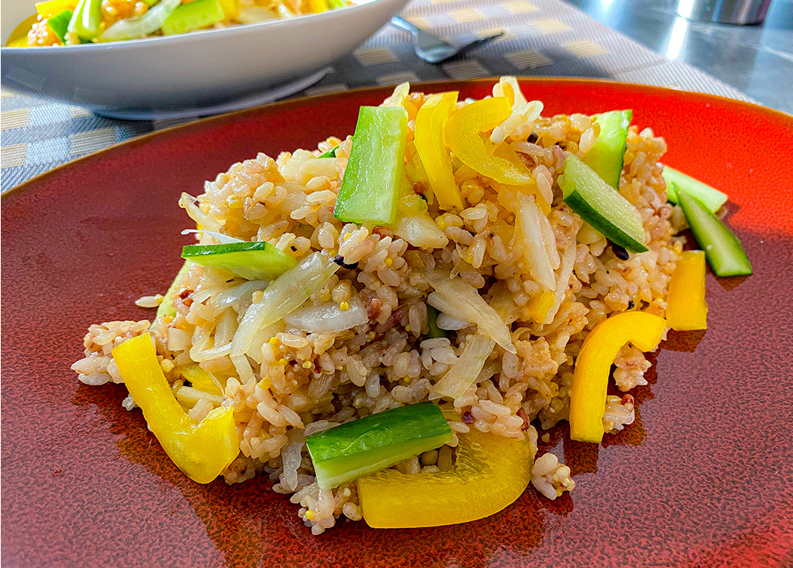

RECIPE
ここでは雑穀米の基本の炊き方とプロ監修のおすすめアレンジレシピを紹介します。ぜひご家庭で試されて美味しくて健康にいいご飯を楽しんでみてください。
まずは基本。

五穀米膳
- 材料
-
- 白米……１合
- 水……１合のお米の分量＋大さじ１（約15 ml）
- 五穀米膳……大さじ１(約15 g)
- 作り方
-
- 米１合分の白米をいつもどおりを研ぎ、水もいつも分量入れる。
- 五穀米とお水をそれぞれ大さじ１ずつ入れ、お好みで白米一合あたり塩ひとつまみを加え、よくかき混ぜてから１時間以上ひたす。
- あとはいつも通り炊くだけ。あっという間に美味しい雑穀米の完成。
arranged recipe 0１

五穀米ピザ
- 材料
-
- A.白ゴマ……大さじ2
- A.塩……小さじ1
- B.アンチョビフィレ……6枚(手でちぎる)
- B.チェリートマト……6～8個(4つ切り)
- B.米……1カップ
- B.福っくら御膳……大さじ3
- B.水……250㏄
- B.モッツァレラチーズ……1玉
- B.パルメジャーノ(チーズ)……大さじ4
- 大葉……5～6枚(手でちぎる)
- 作り方
-
- 米はといで、1O分浸水させ、15分水切りしておく。米に福っくら御膳を合わせ、水を加えて炊き上げ、10分蒸らす。
- Aを加え、切るように混せ合わせる。おむすびを握る要領で1膳分のご飯をまとめる。
- 天板にオリーブオイルを伸ばし、半量を直径15㎝大、厚さ5㎜程になるように、手で押さえながら広げる。同様にもう1枚つくる。
- それぞれの上に半量ずつ、チーズとBをのせ、250～300度のオーブンで7～10分、 チーズに焼き色が少しつくまで焼く。焼き上がったら、ちぎった大葉をあしらって完成。
arranged recipe 02

五穀米サラダ
- 材料
-
- A.米1カップ1カップ
- A.福っくら御膳……1/3カップ
- A.水……200㏄強
- B.ドレッシング……50㏄
- B.オリーブオイル……50㏄
- B.フレンチマスタード……小さじ1
- B.塩小さじ……1/2
- B.こしょう……少々
- B.白ワインビネガー……大さじ2
- B.福っくら御膳……大さじ1
- B.れんこん……1/2節
- B.米酢……大さじ1
- B.玉ねぎ……1/2個
- B.セロリ……1/2本
- B.きゅうり……1/2本
- B.パプリカ(黄)……1/2個
- 作り方
-
- 米はといで、1O分浸水させ、15分水切りしておく。Bのドレッシングは合わせておく。
- 玉ねぎは2cmの長さの薄切りにして水にさらす。れんこんは2cm長さの薄切りにし、米酢を加えた熱湯でサッとゆでてザルにあげ、 広げて冷ます。玉ねぎは水をきり、セロリは3㎝長さの短冊切りにする。きゅうりは縦半分に切ってから種を取り、3㎝長さの短冊切りにする。パプリカは種とわたを取り、厚さ5mm・長さ3㎝の千切りにする。
- 土鍋にAを入れて強火にかけ、沸き立ったらフタをして弱火で炊き上げる。炊き上がったら福っくら御膳大さじ1を加え、10分蒸らして切るように混せる。
POINT：鍋中の温度を一定にするために沸き立ったところで一度、上下に混せる!! - 炊き上がったご飯をボウルにうつし、熱いうちにBのドレッシングを回しかけ、 玉ねぎ・れんこん・セロリの順に加えて混ぜる。粗熱がとれたら、きゅうり・パプリカを合わせて、15分程冷蔵庫に置いて 馴染ませたら出来上がり。